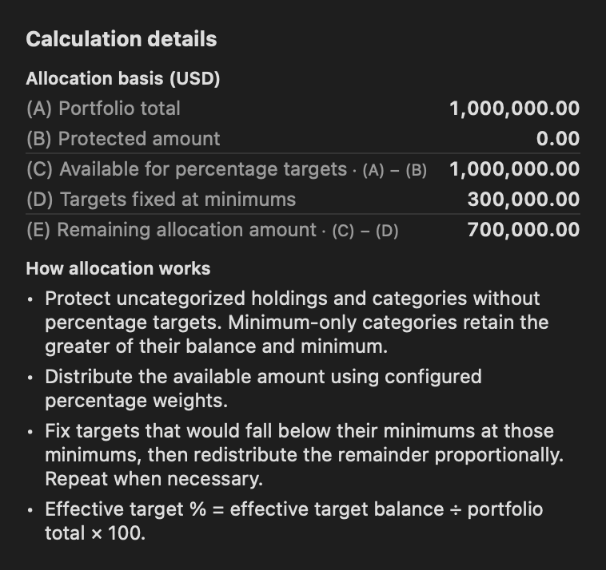
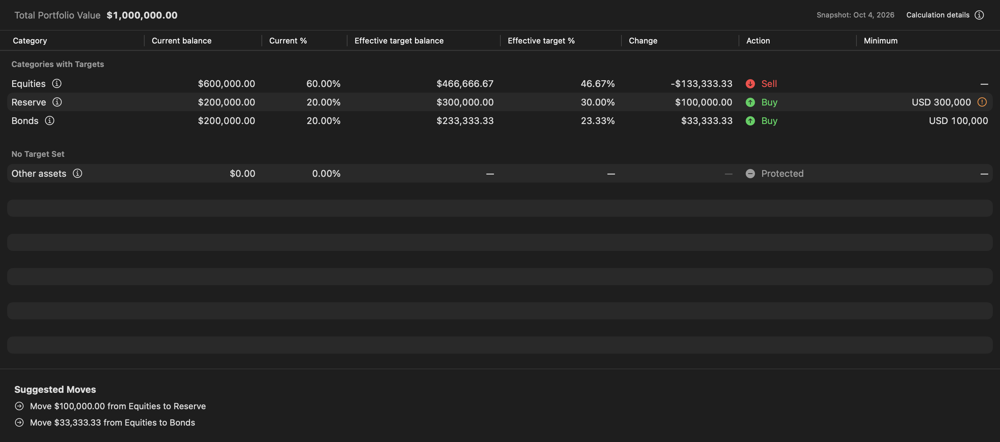
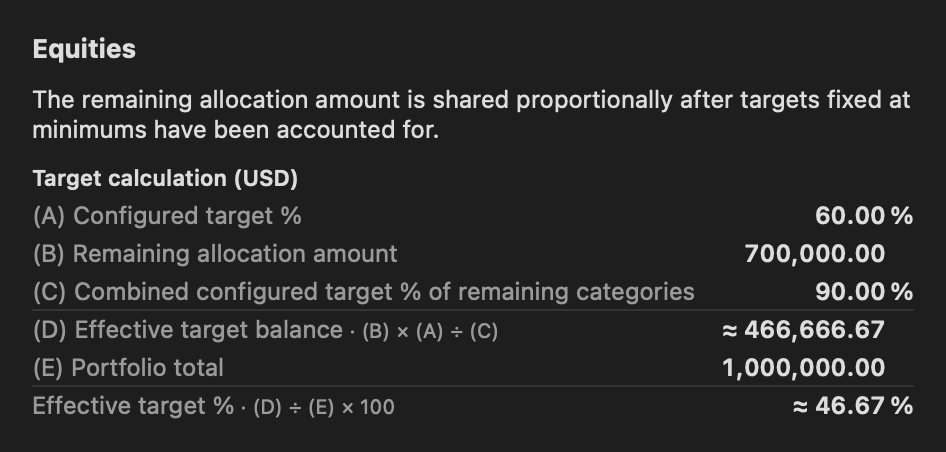
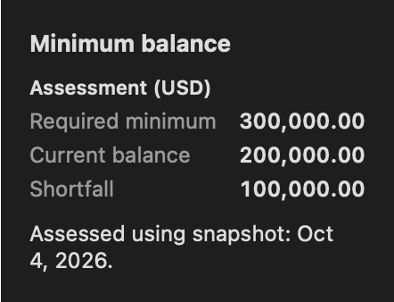
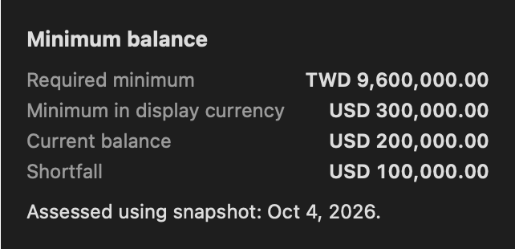
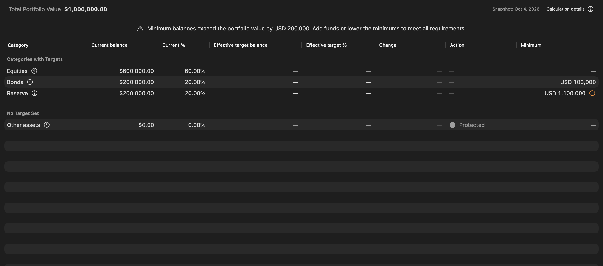

Rebalancing¶
Rebalancing previews moves between categories using your latest snapshot. It does not trade, edit balances, or record cash flows. The plan assumes that no money enters or leaves the portfolio.
Allocation basis¶
- Reserve current balances in categories without percentage targets and in uncategorized assets.
- For a minimum-only category, reserve the larger of its current balance and minimum. Existing surplus stays in that category.
- Distribute the remaining available pool according to percentage targets, while respecting every minimum. Percentage targets must total 100%.
When a minimum binds, the remaining flexible percentage targets are adjusted proportionally. The compact header shows total portfolio value and snapshot date. Open Calculation details for portfolio total, protected amount, available allocation, and the calculation rules. Current and effective percentages describe shares of the whole portfolio; Your configured percentage describes your preference within the available pool; it appears in category settings and relevant category calculation inputs.

Example¶
For a TWD 1,000,000 portfolio with configured percentages of 10% for Reserve, 60% for Equities, and 30% for Bonds:
| Category | Current balance | Current % | Effective target balance | Effective target % | Change | Action | Minimum |
|---|---|---|---|---|---|---|---|
| Reserve | 200,000 | 20% | 300,000 | 30% | +100,000 | Buy | 300,000 |
| Equities | 600,000 | 60% | About 466,666.67 | 46.67% | About −133,333.33 | Sell | None |
| Bonds | 200,000 | 20% | About 233,333.33 | 23.33% | About +33,333.33 | Buy | None |
The reserve minimum requires 30% of the total portfolio. The remaining TWD 700,000 is distributed in a 60:30 ratio. Example amounts are rounded for reading; the app preserves Decimal precision.
Reading suggestions¶
Read from left to right: current holdings, effective targets, the change/action, then the minimum requirement. Current % and Effective target % both use the entire portfolio. Minimum-only categories show their calculated effective share and retain any surplus. Unavailable or infeasible targets, shares of a zero total, and rows without goals show “—” in Effective target %. Hover over a percentage cell for its explanation.

Each category has one table row. Minimum shows your requirement; Effective target balance and Effective target % show the calculated target, and Change shows the amount to move. Action identifies Buy, Sell, Protected, or Small adjustment. Protected (Keep) shows a neutral filled-circle minus icon before its text, alongside the Buy/Sell arrows. Click the status icon beside the minimum to view its requirement, current balance, shortfall, and snapshot date. For different currencies, it distinguishes the original minimum from the converted amount; missing values appear as “—”. Open the information button beside the category for a contextual explanation and a lettered calculation table. Calculation details reconciles portfolio total, protected funds and available allocation; it also shows the amount fixed at minimums and the remaining allocation when relevant. No category lists are included; an unavailable plan shows its reason instead of incomplete totals. Protected holdings appear separately. At narrow widths, scroll the table horizontally to see every column.
Inside each help popup, a table with one shared monetary currency shows it once in its heading. Mixed-currency tables keep currency codes beside every amount. Percentage rows retain their percent signs, unavailable values remain “—”, and amounts in explanatory sentences retain their currency codes.
Suggested moves pair actual reductions and increases. A mandatory minimum top-up remains visible even below one display-currency unit, with its donor reduction. Other subunit differences show Small adjustment; omitted or unmatched amounts appear as a residual. Suggestions do not account for taxes, fees, trading lots, or whether particular assets are liquid.
Popup amounts use the same display precision as asset values. Small nonzero amounts appear as bounds such as \<0.01, and tiny changes indicate an increase or decrease instead of displaying zero. Minimum status and rebalancing calculations use the original Decimal values, even when displayed balances look equal.
Suggested Moves funds all minimum shortfalls before optional percentage adjustments. Small donor reductions are included when larger reductions cannot cover those minimum shortfalls. A category’s increase above its minimum does not count as mandatory funding. Repeated moves between the same two categories are combined.
Help popup examples¶
Category details¶

Popups fit the width of their table content, with formulas beside row labels and values aligned on the first text baseline. Explanatory paragraphs wrap within that width. All row labels use the same secondary color. Values use the standard system font with one bold weight and equal-width digits, matching the dashboard chart tooltips. Dividers distinguish result rows. Percentage symbols appear in a separate suffix column, allowing the numeric portions to align with balance values; unavailable percentages have no symbol. Rows wrap only when needed to fit the available screen width.
The category table labels inputs (A), (B), (C), and so on. Result rows show formulas that reference those inputs. For Equities in this example, (A) is 60%, (B) is 700,000, and (C) is the combined remaining percentage weight of 90%. Its target balance is (B) × (A) ÷ (C), or approximately 466,666.67. Dividing that balance by the whole portfolio gives 46.67%.
A target fixed at a minimum shows that minimum as the target. A minimum-only category shows the greater of its current balance and minimum. A 0% target receives only its minimum, or zero if none is set. Rounded results or inputs are indicated with ≈; calculations retain their original Decimal precision. Unavailable plans show their reason without calculation rows, and zero-total portfolios show no percentage division.
Minimum assessment: one currency¶
Click the status icon beside a category’s minimum to compare its requirement with the current balance and shortfall. When all amounts use the same currency, the popup shows the currency once in the table heading.

Minimum assessment: different currencies¶
When the minimum and display currencies differ, the popup shows the original requirement and its converted amount using the snapshot’s exchange rates. Currency codes beside each amount help you distinguish them.

When a plan cannot be calculated¶

- Minimums exceed the portfolio: If minimums total TWD 500,000 but the portfolio is TWD 400,000, the unavoidable funding shortfall is TWD 100,000. Add funds or lower requirements. The app does not choose a minimum to sacrifice.
- Protected balances leave insufficient funds: Total minimums may fit, but holdings protected by your settings can prevent funding them. Add funds or change goals to make those holdings eligible for rebalancing.
- Percentages do not total 100%: Edit the percentage targets. Saving an incomplete configuration is allowed; actionable suggestions wait until it is complete.
- Missing rates: Asset values and minimums use the snapshot's stored rates. A missing goal-only currency prevents the plan while valid portfolio values remain visible.
- No snapshot: Record one first. A zero-valued snapshot is different: positive minimums still produce funding shortfalls, and percentages of zero are unavailable.
With only minimum goals, existing balances are protected. Unmet minimums require additional funds or changed settings; the app does not automatically select a donor category. Per-category shortfalls can differ from the external funding shortfall because eligible surpluses may fund some needs.
See also¶
- Categories: Set combined percentage and minimum goals
- Snapshots: Record the balances used by the calculator
- Currencies: Understand original currencies and snapshot rates